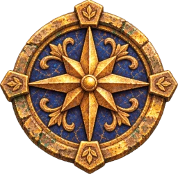
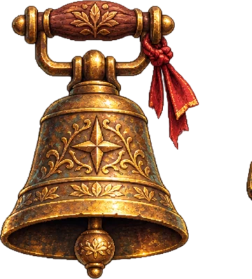
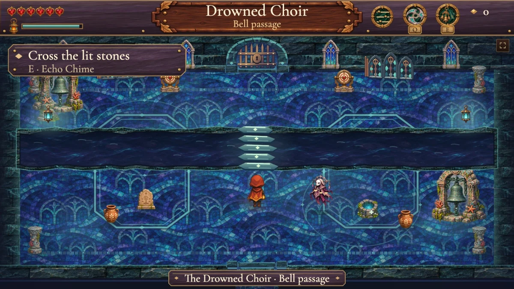

Veilbound
Echoes of the Hollow Crown
Ione’s lantern came back without her. Ring Bellwick’s bell and follow its answer into the Gloam.

Merin Bellwarden
“Rowan, Ione rang the west bell three nights ago. Her lantern came back alone.”

The First Crossing
Follow the bell’s echo from a sunlit village to the Drowned Choir. Raise stepping stones with the Echo Chime, then use the same instrument to silence the guardian’s song.
Play the chapter
Cross the veil
Follow Rowan from Bellwick’s sunlit square into Hushwick, where violet cottages and cyan lanterns mark the same streets.


Beyond the village
Explore the roads of Aurelia and the Gloam. Find an instrument in each dungeon and use it to bring down the guardian inside.


Rowan’s field journal
Four dungeons lie in Aurelia. Six more wait beyond the veil. Chart Rowan’s route and inspect the instruments that open each path.
Aurelia
◆ Select a region to inspect it.

Bellwick Village
Find Merin on the village green. A brief trip to Hushwick starts the trail that leads to Mossbell Sanctuary.
The satchel
Equip two instruments at a time. The tool you bring home from a dungeon can open an old path.

Burst Satchel
Burst charges open cracked masonry. Pots replenish charges.
Lantern-bearer’s handbook
Your first quest
Meet Merin on the Bellwick green to collect Ione’s Burst Satchel. Follow the trail into Hushwick and back, then head west through Westwind Fields and north to Mossbell Sanctuary.
▶ Play VeilboundKeyboard controls
- Move
- WASD / Arrow keys
- Strike / Guard
- J / Hold K
- Dodge / Interact
- Space / F
- Use instruments
- Q / E
- Equipment / Map / Pause
- Tab / M / Esc
Touch & gamepad
On touch screens, use the directional pad on the left and action buttons on the right. On a gamepad, move with the left stick or D-pad. The bottom face button strikes and the left bumper guards.
Settings & saves
Choose Ultra 4K in Graphics for a 3840 × 2160 game view, and use the corner button to enter fullscreen. Settings also include volume, motion, and trail guidance. Use Export save and Import save in the pause menu to move your journey to another device.
Take up the lantern
Explore 24 regions and ten dungeons with a keyboard, gamepad, or touch controls. Your campaign saves in this browser.